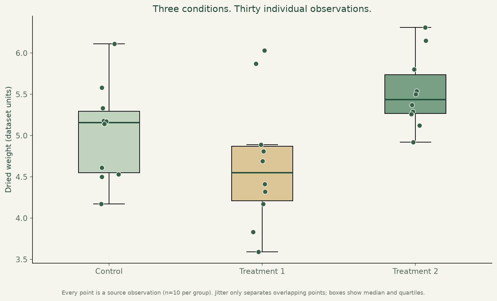
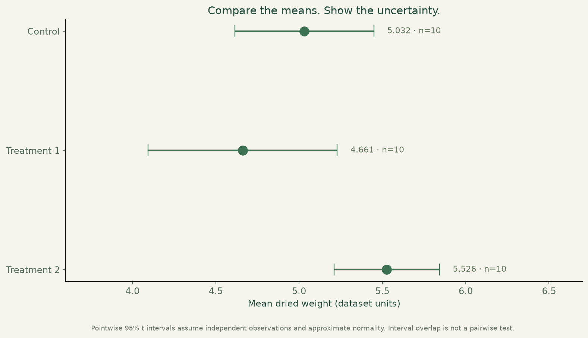
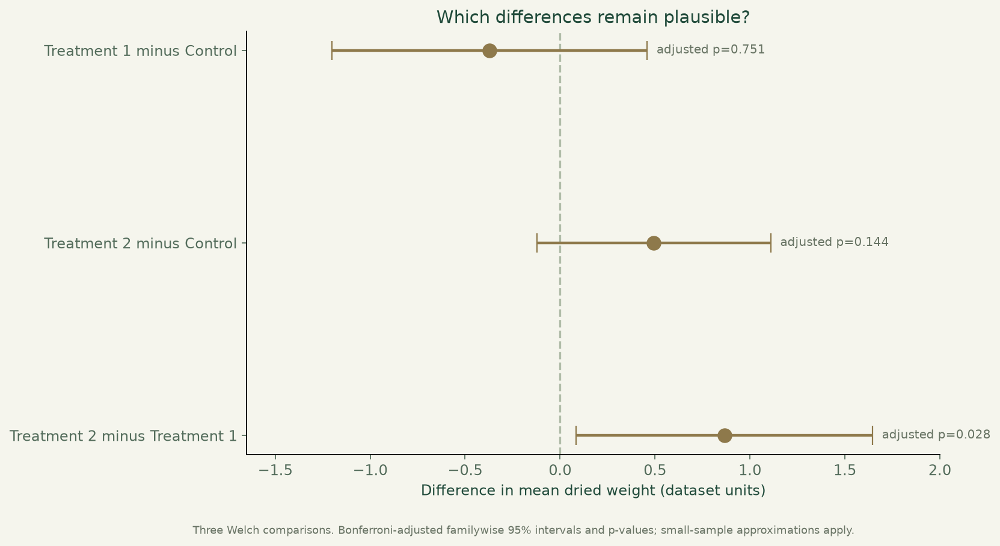

Plant growth & statistics.
Explore thirty plant-growth observations, compare the groups and explain what the statistics can—and cannot—support.

What I built
Added a reproducible, visual PlantGrowth investigation alongside the original statistical coursework, preserving all raw observations and explaining uncertainty.
Why it matters
Differences in averages can be misleading without considering variability. This project shows how visual evidence and statistical testing support a careful comparison.
How it works
- 01
Inspect every observation under control and two treatment conditions, with ten examples per group.
- 02
Compare sample means and uncertainty; use Welch ANOVA as the primary omnibus comparison, with classic ANOVA shown as sensitivity analysis.
- 03
Examine three pairwise differences using Welch tests and a Bonferroni family adjustment, then interpret the small-sample limits.
What it demonstrates
Statistical reasoning, hypothesis testing, visual communication and explaining uncertainty around a decision.
Evidence, with context.
Thirty source observations, ten per group. Mean dried weights: control 5.032, treatment 1 4.661, treatment 2 5.526 (dataset units). Welch omnibus p=0.0174; classic equal-variance ANOVA p=0.0159 is shown as a sensitivity analysis. Pairwise comparisons use a three-comparison Bonferroni adjustment. Methods, assumptions and all observations are visible; this small teaching dataset does not establish general treatment effectiveness.
Verified source: fc9f72275326 · Tests and visual capture ↗




Scope and limitations
Thirty observations in a teaching dataset do not establish universal treatment effectiveness. Independence and the original experimental design cannot be verified from the CSV alone. Mean intervals assume approximate normality; Welch inference is a small-sample approximation. A p-value is neither an effect size nor the probability that the null hypothesis is true. Methods were selected for this educational investigation, not preregistered confirmatory analysis.
Visual provenance and source attribution are recorded in the evidence register ↗.
Under the surface.
Architecture, methods and improvements
Source validation checks three groups of ten finite measurements. The reproducible script records dataset SHA-256 and dependency versions, computes Welch and classic one-way ANOVA, pointwise t intervals and three Bonferroni-adjusted Welch pair comparisons. Tests independently reconcile classic F with sums of squares, verify group summaries/multiplicity and reproduce numeric outputs byte-for-byte. Original notebook exercises remain intact.
Try it locally
Install requirements.txt, run python analyze_plants.py and python -m unittest discover -p "test_*.py" -v. Results, raw source CSV and the original project.ipynb are available in the repository.
The portfolio is a static GitHub Pages site. Server applications run locally; the portfolio does not collect bookings, credentials or payments.